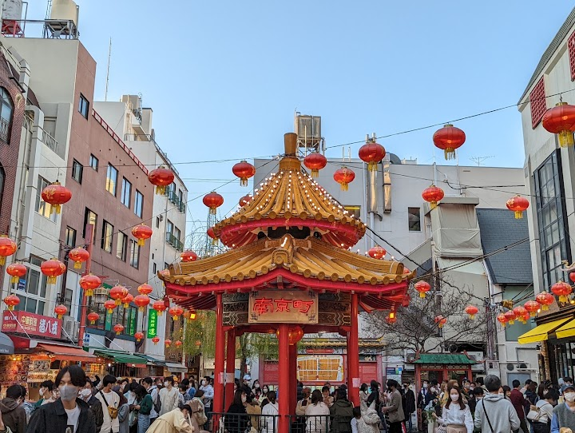
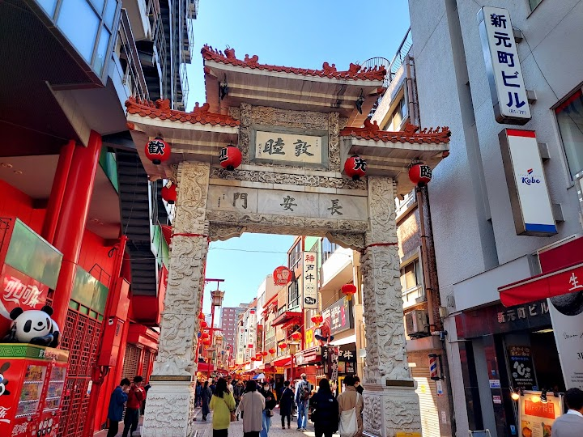
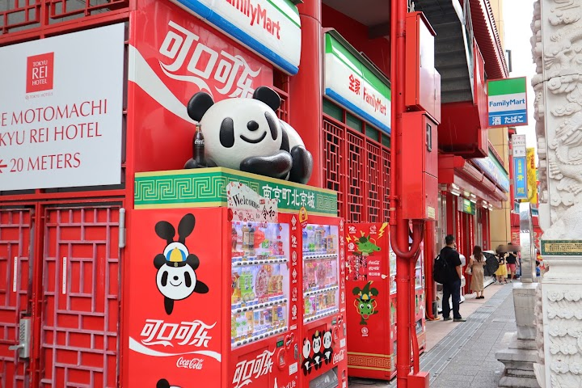
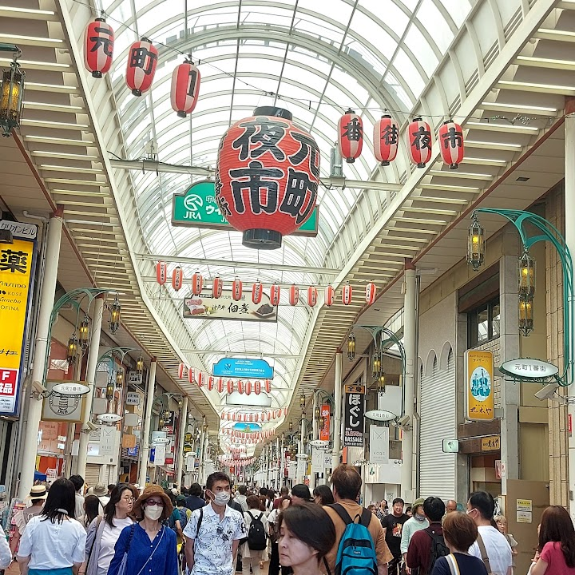
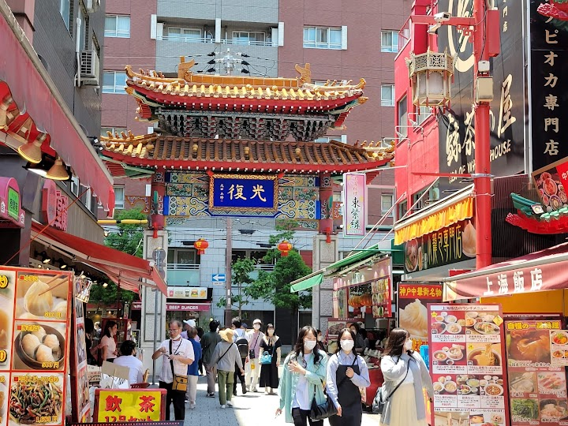

Nankinmachi Chinatown (suggested)
Nankinmachi is Kobe's Chinatown, established in 1868, with eateries, souvenir shops, mahjong clubs and lively street food stalls. It is a fun place to stroll and graze.
Open in Google Maps (street view, more photos and reviews there)






Visitor tips on finding it and getting there
If you're visiting Kobe and looking for a fun, lively spot to grab some amazing street food, Nankinmachi is the perfect place to just wander around and eat your way through. Located just a short stroll from Motomachi Station, this Chinatown isn’t massive, which actually makes it super chill and easy to explore without getting tired. The whole vibe here is incredibly energetic, with bright red lanterns everywhere, traditional Chinese gates, and a cool central pavilion that's perfect for people-watching or snapping a quick photo. But the real highlight is definitely the food stalls lining the st
I enjoyed this more than the Yokohama Chinatown. The location is also perfect as it's just in front of the Motomachi station, but a leisurely walk to Sannomiya station is a great option if you want to visit the numerous stores along the way.